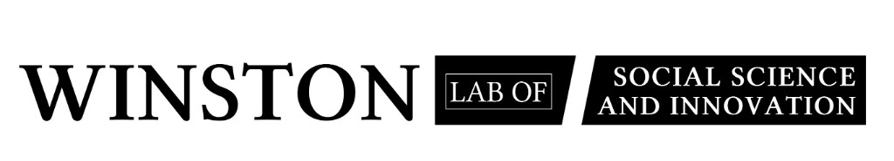

JDP Foundation
Innovating Social Science for a Changing World.
Bridging academic research and real-world application. Funded and supported by the J.D. Phoebe Foundation.
Winston Lab of Social Science and Innovation
Established in 2020 and officially incorporated in 2022, Winston Lab is a premier interdisciplinary research hub. We combine diverse expertise across psychology, sociology, anthropology, economics, and data science. Our laboratory is a safe haven for critical, open thinking, where talented individuals merge personal experiences with rigorous academic knowledge to generate unique, actionable insights.

Mission & Goal
Our mission is to push the boundaries of social science by translating theoretical research into tangible societal benefits. We foster collaboration between academia, industry, and policymakers to tackle complex social issues and contribute to the betterment of communities worldwide.
Research Focus
- The socio-economic impacts of Globalization.
- The complex challenges of an Aging Population.
- Mental Health vulnerabilities during emerging adulthood.